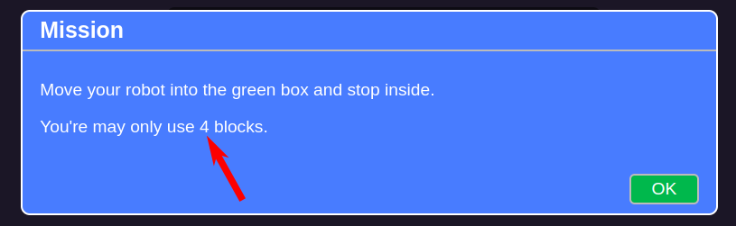
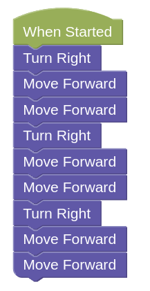
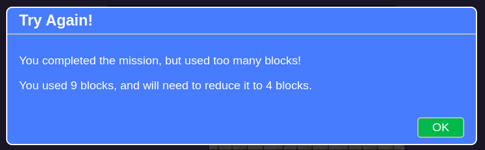
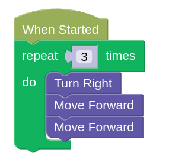

Loops
To repeat something, we can use the repeat block, which is found under the Loops category.

Any blocks that you put inside the repeat block will be repeated by the specified number of times.

Example
For each of these challenges, you'll need to complete the challenge using as few blocks as possible.
Make sure to click the Mission button to see how many blocks you are allowed to use.

You can solve this easily using just Turn Right and Move Forward blocks...

...but you'll use too many blocks this way.

Repeat
Can you find the pattern in the earlier solution?

We can make use of patterns to simplify this solution!

Challenges
For each challenge, click on the Simulator Tab, then the Mission button to see the mission you need to do. Each challenge will have a different blocks limit, so make sure to check each time!

Follow the instructions and note down the special Code after doing the challenge successfully!
Loops Challenge 1
-
Load this challenge
-
Tip: There's no need to sleep inside the block if your robot ends its program inside it.
Loops Challenge 2
- Load this challenge
Loops Challenge 3
-
Load this challenge
-
Hint: You may need to use more than one repeat loop. Also, it's ok to make an extra turn if it helps you stay within the blocks limit.
Loops Challenge 4
-
Load this challenge
-
Hint: Not every block needs to be inside a loop.
Loops Challenge 5
- Load this challenge
Loops Challenge 6
- Load this challenge